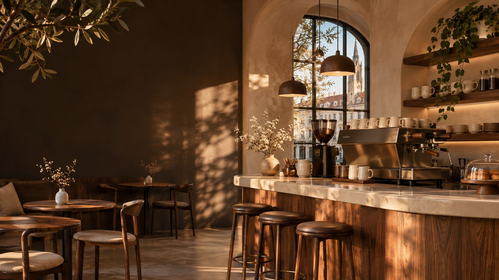

Espresso
Intenzivan i uravnotežen.
190 RSDKafa. Grad. Trenutak.
Mesto za jutarnji espresso, razgovor i predah u ritmu grada.
Pogledaj meniNaša priča
Urban Coffee je izmišljeni gradski kafić u Novom Sadu. Biramo pažljivo pržena zrna, pripremamo napitke sa merom i stvaramo prijatan prostor za svaki deo dana.
Atmosfera

Podelite
Posetite nas
Adresa: Zmaj Jovina 18, Novi Sad
Telefon: 021 555 018
E-pošta: zdravo@urbancoffee.rs